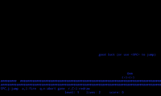
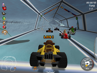
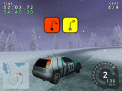
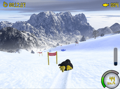

Rennspiele
Zum Verständnis dieses Artikels sind folgende Seiten hilfreich:
Moon Buggy¶

Moon Buggy  ist ein minimalistisches textbasiertes Rennspiel. Wenn mal X ausgefallen ist, und man nicht mehr weiter weiß, kann man trotzdem Moon-Buggy spielen.
ist ein minimalistisches textbasiertes Rennspiel. Wenn mal X ausgefallen ist, und man nicht mehr weiter weiß, kann man trotzdem Moon-Buggy spielen.
Kurzbeschreibung: Das Mondfahrzeug möglichst lange über verschiedene Hindernisse (z.B. Mondkrater) steuern ...
Benötigtes Paket:
moon-buggy (universe)
 mit apturl
mit apturl
Paketliste zum Kopieren:
sudo apt-get install moon-buggy
sudo aptitude install moon-buggy
Für eine Version mit Sound:
moon-buggy-esd (universe)
mit apturl
Paketliste zum Kopieren:
sudo apt-get install moon-buggy-esd
sudo aptitude install moon-buggy-esd
SuperTuxKart¶

Kurzbeschreibung: SuperTuxKart ist ein freies 3D-Kart-Rennspiel, bei dem es mehr um Spaß als um Realismus geht. Weiterlesen ...
supertuxkart (universe)
mit apturl
Paketliste zum Kopieren:
sudo apt-get install supertuxkart
sudo aptitude install supertuxkart
Trigger Rally¶

Kurzbeschreibung: Trigger Rally ist bemerkenswert gut zum Driften auf teilweise recht fordernden Strecken geeignet. Das Spiel läuft auch auf sehr alter Hardware noch flüssig und verfügt über 11 Events und über 100 Einzelrennen mit physisch unterschiedlichen Untergrundmaterialien wie Schnee, Schlamm, Sand, Eis und Asphalt. Im Laufe der persönlichen Spielkarriere können dabei stärkere Autos und weitere Events freigeschalten werden. Auf den meisten Strecken stehen auch Beifahrerkommandos gesprochen (bisher nur englisch) und als Symbole zur Verfügung. Diverse Einstellungen können in einer gut kommentierten XML-Datei angepasst werden.
Eine Anleitung für die überraschend einfache Erstellung neuer Rennstrecken ist ebenfalls über die Projekt-Webseite abrufbar.
Benötigtes Paket:
trigger-rally (universe)
mit apturl
Paketliste zum Kopieren:
sudo apt-get install trigger-rally
sudo aptitude install trigger-rally
ExtremeTuxRacer¶

Kurzbeschreibung: ExtremeTuxRacer ist der einzige aktiv weiterentwickelte Fork von Tux Racer. Es unterstützt zwei Spielemodi, Training und Veranstaltungen, in denen man entweder gegen den eigenen Highscore oder gegen die Zeit spielt. Dabei lassen sich u.a. Lichtverhältnisse und Windgeschwindigkeit anpassen.
Benötigte Pakete:
extremetuxracer (universe)
extremetuxracer-data (universe)
mit apturl
Paketliste zum Kopieren:
sudo apt-get install extremetuxracer extremetuxracer-data
sudo aptitude install extremetuxracer extremetuxracer-data
- Erstellt mit Inyoka
-
 2004 – 2017 ubuntuusers.de • Einige Rechte vorbehalten
2004 – 2017 ubuntuusers.de • Einige Rechte vorbehalten
Lizenz • Kontakt • Datenschutz • Impressum • Serverstatus -
Serverhousing gespendet von